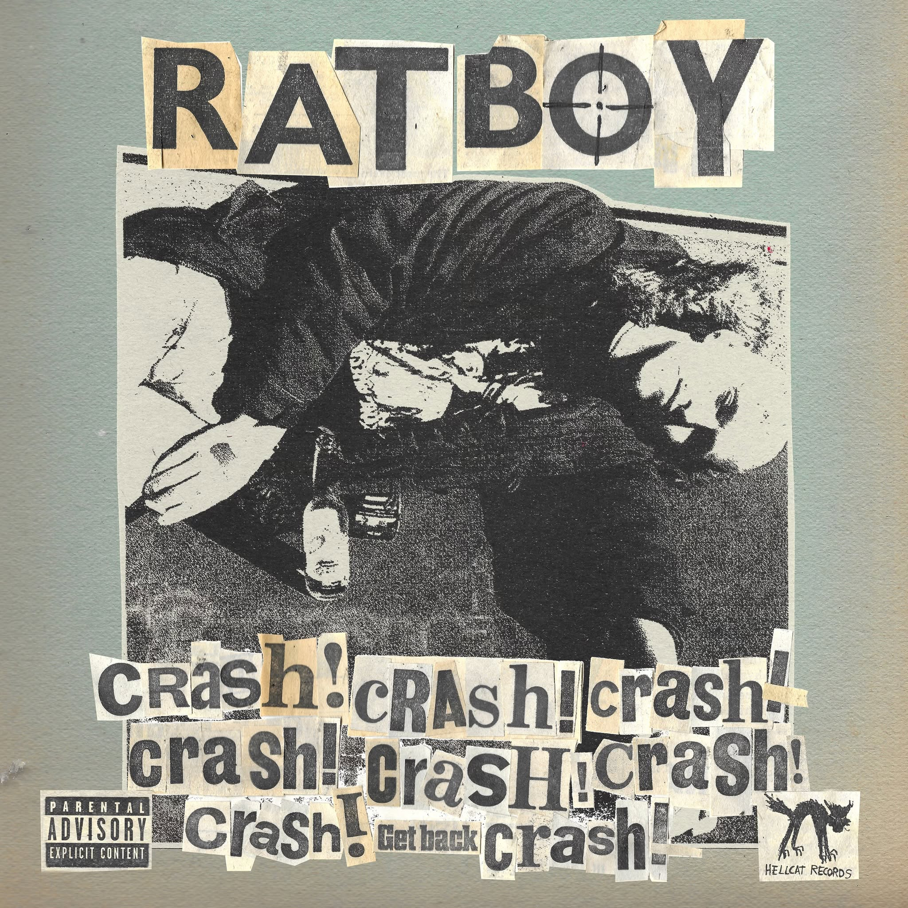

Review
RAT BOY - High Life

Da hat Hellcat Records aber wieder einen Haufen Dreck aus der Gosse gezogen.
Und ich meine das ausnahmsweise als Kompliment.
"High Life" ist irgendwann letzte Woche erschienen und seitdem versuche ich verzweifelt, den Song in irgendeine Schublade zu stopfen.
Pop-Punk?
Melodic Hardcore?
Skatepunk?
Keine Ahnung.
Ich bin mittlerweile komplett überfordert mit den ganzen Genre-Bezeichnungen.
Versuchen wir es über Bands.
Ein bisschen Screeching Weasel.
Ein wenig Blink-182.
Hier und da ein Hauch Rancid.
...
Ach, scheiß drauf.
Schubladen braucht man doch eh nur, damit man seine eigenen Vorurteile schneller findet.
RAT BOY klingen jedenfalls nicht wie irgendeine glattgebügelte Pop-Punk-Kapelle, die vorher fünf Wochen mit einem Produzenten über die perfekte Radiolänge gestritten hat.
"High Life" hat genau diese Mischung aus Melodie, Druck und kleinen Ecken, damit das Ganze nicht nach Plastikbecher mit Markenlogo schmeckt.
Nicht zu poppig.
Nicht zu sauber.
Nicht auf Punk getrimmt wie ein Werbespot für zerrissene Jeans.
Gerade dreckig genug.
Der Song macht das, was guter Skatepunk, Pop-Punk oder wie auch immer ihr den Kram nennen wollt, machen sollte:
Er gibt den Beinen schlechte Ideen.
Mir zumindest.
Wäre ich zwanzig Jahre jünger, würde ich mir das Ding auf eine Playlist packen, mein Skateboard aus dem Keller holen und mich gepflegt auf die Fresse legen.
Heute würde vermutlich eher das Skateboard auf mir liegen.
Egal.
"High Life" rollt nach vorne, bleibt im Kopf hängen und schafft das Kunststück, gleichzeitig eingängig und angenehm rotzig zu klingen.
Nicht brav.
Nicht poliert.
Nicht so, als hätte jemand vorher ausgerechnet, an welcher Stelle der Refrain bei TikTok zünden muss.
Sondern einfach mit genug Dreck unter den Fingernägeln.
Man hört, dass RAT BOY keinem Trend hinterherhecheln.
Die machen ihr Ding.
Und das verdammt gut.
Laut YouTube-Begleittext stammt "High Life" vom Album "CRASH!" und läuft über Hellcat Records. Geschrieben wurde die Nummer unter anderem von Jordan Cardy, Harry Todd, Liam Haygarth, Noah Booth und Tim Armstrong.
Das erklärt natürlich einiges.
Tim Armstrong taucht in so einem Credit auf und plötzlich riecht der Raum automatisch nach kaputtem Asphalt, viel zu heißem Verstärker und dem dringenden Bedürfnis, irgendwo gegen eine Wand zu fahren.
Ich hoffe wirklich, dass Hellcat Records RAT BOY nicht nur einmal aus der Gosse gezogen hat, sondern dass da noch einiges nachkommt.
Denn wenn "High Life" ein Vorgeschmack auf das ist, was da auf "CRASH!" lauert, dann dürfte dieses Ding noch ordentlich rollen.
Vielleicht sogar bergab.
Ohne Bremse.
Mit mir irgendwo darunter.
Verdammte Banausen.